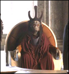

Forums galactiques > Taverne galactique : lieu de discussion informel > Recrutement
Pages : 1
| Capitaine Kortzanov Réputation à la taverne : 196  19/06 ETU 16:31 | Score : 0 Détails Salutations commandants,
Je souhaite vous informer que je recherche un jeune commerçant. Il devra accepter de rejoindre les FSIG et se concentrer en priorité sur mes besoins. Mais je ne l'empêche pas d'avoir des relations commerciales avec les autres commandants de la Galaxie. En échange, je m'assurerai qu'il soit sous bonne protection. Toutes les questions qu'il se posera trouveront réponses et il bénifiecira entre autres de diverses aides geoeconomiques et militaires. Les commandants intéréssés devront impérativement envoyer une lettre de motivation par MP contenant le score, le classement, le nombre de planètes et un bref discours sur ses pensées politiques.(HRP: dans le jeu bien entendu : démocrate, anarchiste, sanguinaire, ou autre) Voila, à très bientôt je l'espère. Cordialement, Irina Kortzanov. | ||
| Gros Bisous Réputation à la taverne : 214  19/06 ETU 17:46 | Score : 0 Détails "Je souhaite vous informer que je recherche un jeune commerçant."
t'aime pas les vieux ?? "Il devra accepter de rejoindre les FSIG et se concentrer en priorité sur mes besoins. Mais je ne l'empêche pas d'avoir des relations commerciales avec les autres commandants de la Galaxie." egocentrique ? "Les commandants intéréssés devront impérativement envoyer une lettre de motivation par MP contenant le score, le classement, le nombre de planètes et un bref discours sur ses pensées politiques.(HRP: dans le jeu bien entendu : démocrate, anarchiste, sanguinaire, ou autre)" raciste ?? "Voila, à très bientôt je l'espère. Cordialement, Irina Kortzanov." bisous mon chou ;) | ||
| Capitaine Kortzanov Réputation à la taverne : 196 19/06 ETU 17:55 | Score : 0 Détails Je t'adore gros bisous, merci beaucoup, tit... oups!
Bon, apparemment j'ai pas assez bien précisé, je parle d'un jeune commandant dans le sens d'un nouveau commandant, quelqu'un qui débute... Pour l'egocentrisme, j'ai bien précisé que je ne l'empêche en aucun cas de faire du commerce avec les autres commandants. Quelqu'un d'egocentrique ne l'aurai pass voulu. Comment ça raciste? Je le prendrai si ses motivations sont bonnes et peu m'importe que ce soit un lézard, un robot, un humain, etc... Quand à son choix politique, je peux pas prendre quelqu'un de sanguinaire alors que je pronne la paix, la diplomatie et la démocratie! Je vois pas ce qu'il y a de raciste là-dedans! | ||
| Gros Bisous Réputation à la taverne : 214 19/06 ETU 18:07 | Score : 0 Détails xD , trop forte , Bisous partout ;)
| ||
| Capitaine Kortzanov Réputation à la taverne : 196 19/06 ETU 18:13 | Score : 0 Détails Irina se tourna vers ce petit ours en peluche, interloquée.
"Moi, trop forte? Bon à la limite, je veux bien vous accorder du un peu enveloppée, mais "forte"! Ca non, c'en est trop, allez suivez moi, on va chez l'opticien mon petit!" | ||
| Gros Bisous Réputation à la taverne : 214 19/06 ETU 18:35 | Score : 0 Détails chez l'opticien ? oooh ouiiii j'ai envie de vous voir mieux ma beauté fatale *raide dingue*, soignez moi soignez moi !
| ||
| Capitaine Kortzanov Réputation à la taverne : 196 19/06 ETU 18:40 | Score : 0 Détails soupirs...
| ||
| Gros Bisous Réputation à la taverne : 214 19/06 ETU 18:41 | Score : 0 Détails ^____________^
| ||
| alexandre Réputation à la taverne : 17  19/06 ETU 18:44 | Score : 0 Détails Je croit que le recrutement est terminé. Gros bisous a l'aire très motivé...
| ||
| Capitaine Kortzanov Réputation à la taverne : 196 19/06 ETU 18:46 | Score : 0 Détails oui, mais ce n'est ni un "jeune" commandant, ni un commercant donc... L'offre de recrutement est toujours valable.
| ||
| Gros Bisous Réputation à la taverne : 214 19/06 ETU 18:49 | Score : 0 Détails ^___________________^
| ||
| Seigneur Grimaldus Réputation à la taverne : 806  19/06 ETU 19:16 | Score : 0 Détails Vous acceptez les Seigneurs ? Personnelement je cherche quelqu'un qui oserait se plaindre de moi quand je fais quelque chose de pas bien ><
| ||
| Chacomat Réputation à la taverne : 47  19/06 ETU 19:32 | Score : 0 Détails Je suis sur que le commandant jafnar se pleidrais, vous ne croyez pas ? ;)
| ||
| Nute Gunray Réputation à la taverne : 6  11/08 ETU 00:30 | Score : 0 Détails moi je suis un jeun commercant qui debute je voudrai bien t'aider mais il faut apparavant que je fasse l'hyperfusion de plus j'ai mon frer qui est assez puissant et qui va me demander pas mal de chose.
cordialement Vice roi Nute Gunray. | ||
| Jafnhar Réputation à la taverne : 660  11/08 ETU 00:40 | Score : 0 Détails La Fondation peut vous aider ... vous cherchez du soutien et une formation vous permettant d'atteindre le haut niveau ? Vous voulez un véritable esprit de groupe et un peu d'aide pour vous lancer ?
Rejoigniez nous, vos objectifs seront atteints grâce à La Fondation. Pour les candidatures, contactez le commandant Jafnhar. Ceci est un message publicitaire de la X-C Advertisements |
Pages : 1
Forums galactiques > Taverne galactique : lieu de discussion informel > Recrutement